Étude de cas · Projet d'équipe en stage
YA SatScope
Logiciel Windows développé en équipe pour le suivi satellitaire et l'exploration de la réception SDR. Ma participation a porté sur les parties suivi des satellites et spectre, encore expérimentales.

Contexte
YA SatScope est une application de bureau conçue en équipe de trois pendant mon stage. Elle rassemble le suivi orbital, des outils de réception radio SDR et l'organisation des observations dans une interface Windows.
Ma contribution
J'ai contribué aux volets du suivi satellitaire et du spectre au sein de l'équipe. Je débute encore dans ces domaines : je présente ma participation comme un apprentissage en équipe, pas comme la création de l'ensemble du logiciel.
Fonctions du logiciel d'équipe
- Suivre les satellites depuis un catalogue orbital local : carte, trajectoire, prévisions de passages, agenda et fiches techniques.
- Explorer la réception SDR : état du récepteur, spectre et waterfall, puis enregistrement ou relecture de fichiers IQ.
- Organiser les observations dans des projets locaux, préparer des rapports PDF et lancer le décodage avec SatDump quand il est installé.
- Consulter des observations du réseau SatNOGS avec une connexion Internet.
Vérifications documentées
Le rapport de tests du 4 novembre 2026 consigne 156 tests automatisés réussis. Il décrit aussi des essais du récepteur Pluto et le décodage d'un signal de référence synthétique.
La réception et le décodage d'un satellite réel, ainsi que plusieurs essais matériels et de longue durée, restent à valider.
Outils du projet d'équipe
- Python et PySide6 pour l'application Windows.
- Skyfield et SGP4 pour les calculs orbitaux.
- NumPy, SciPy et PyQtGraph pour les traitements et l'affichage du signal.
- SQLite pour le stockage local ; SatDump comme outil externe de décodage.
Mon niveau
Je suis débutant sur ces technologies. La liste décrit les outils du projet collectif, pas une maîtrise individuelle de chacun. Ma participation s'est concentrée sur les parties satellites et spectre, encore expérimentales.
Les écrans de l'application
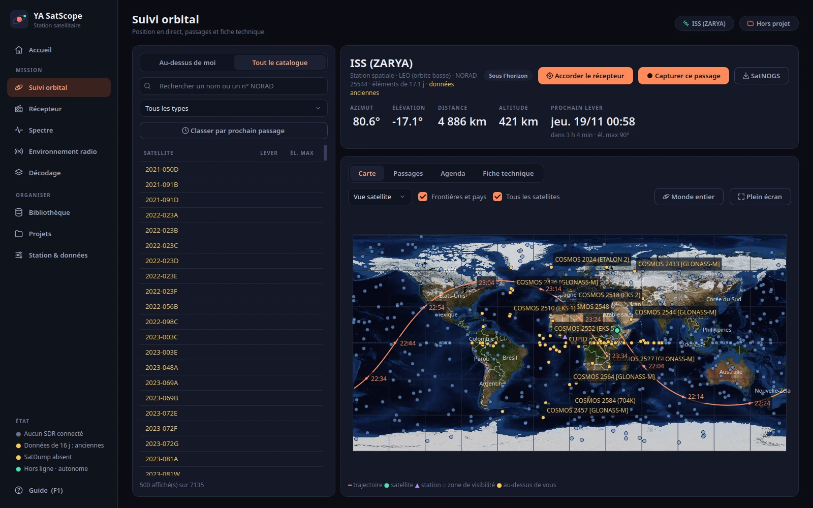
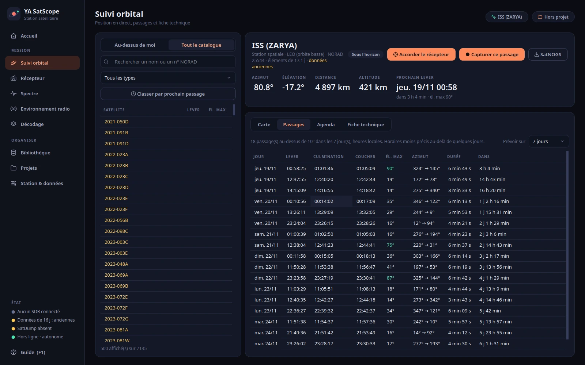
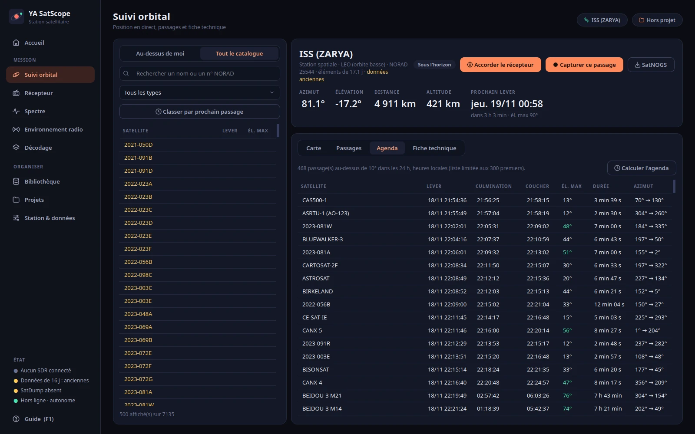
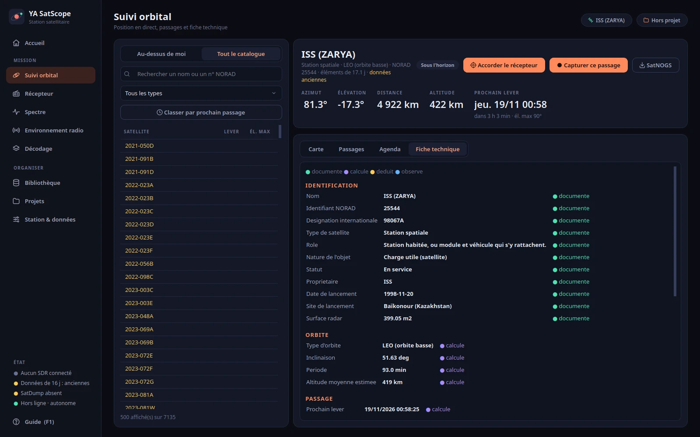
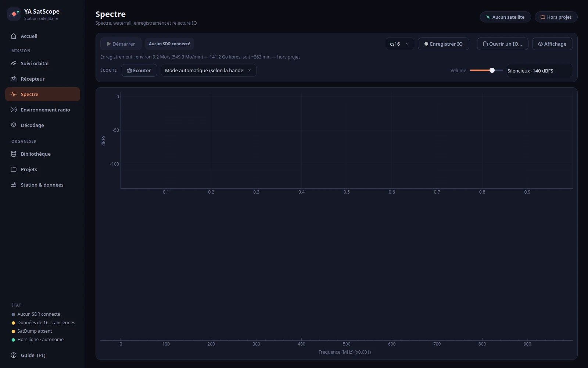
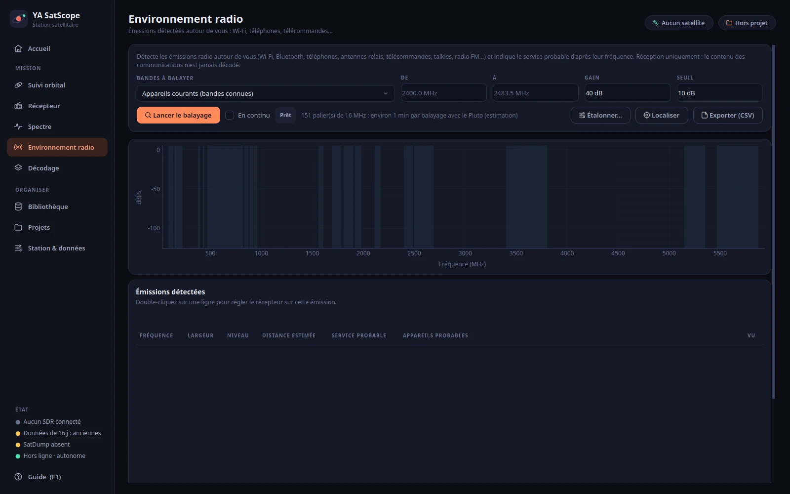
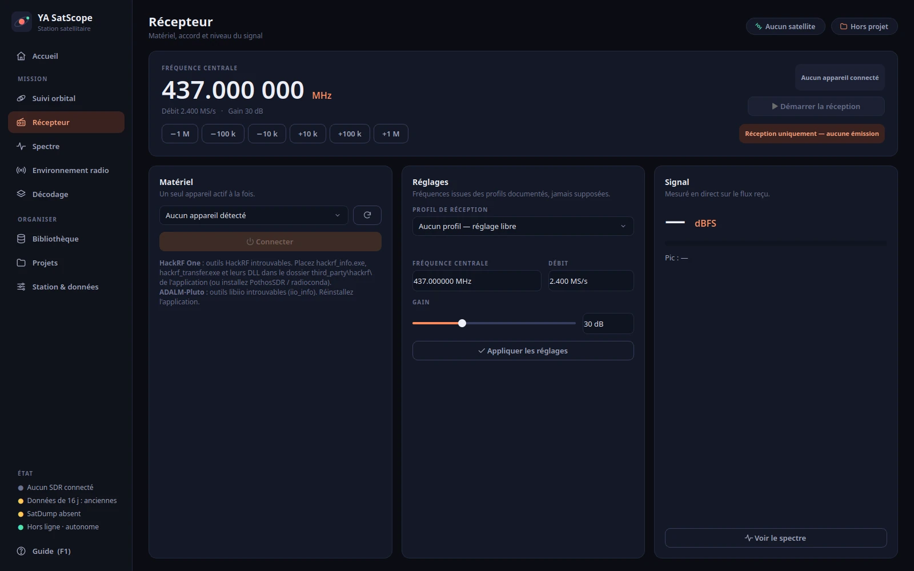
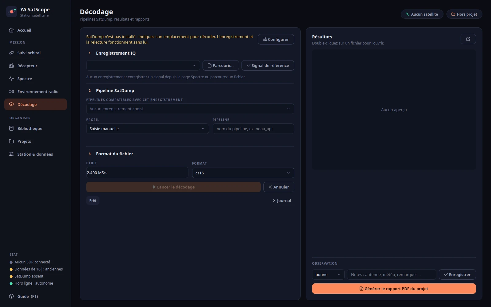
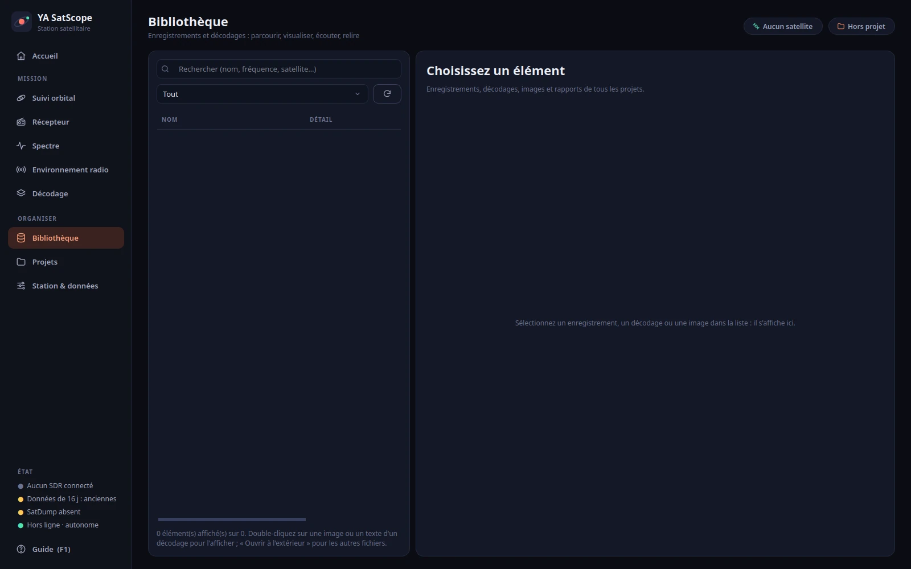
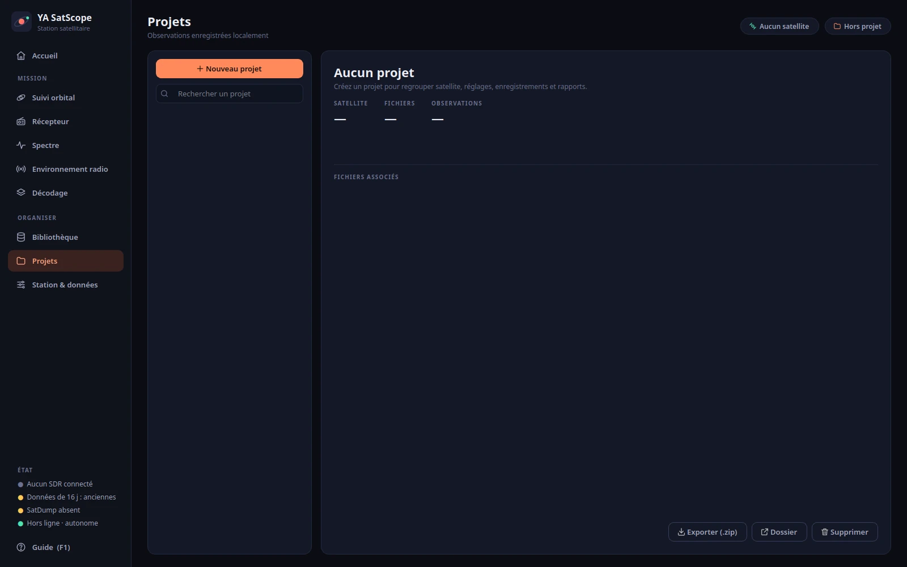
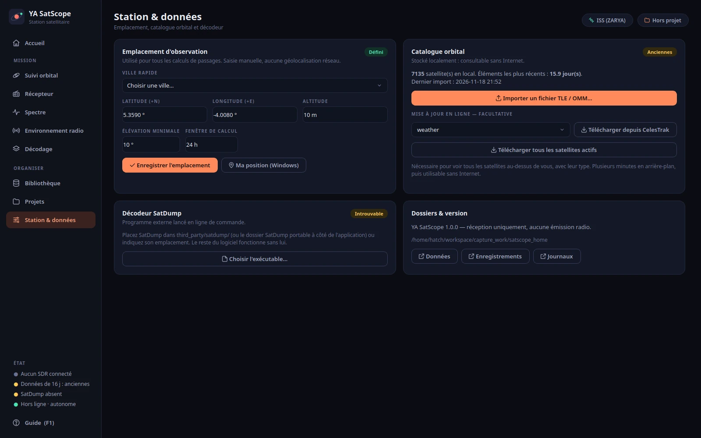
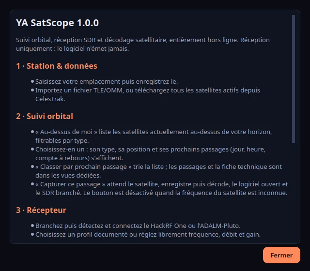
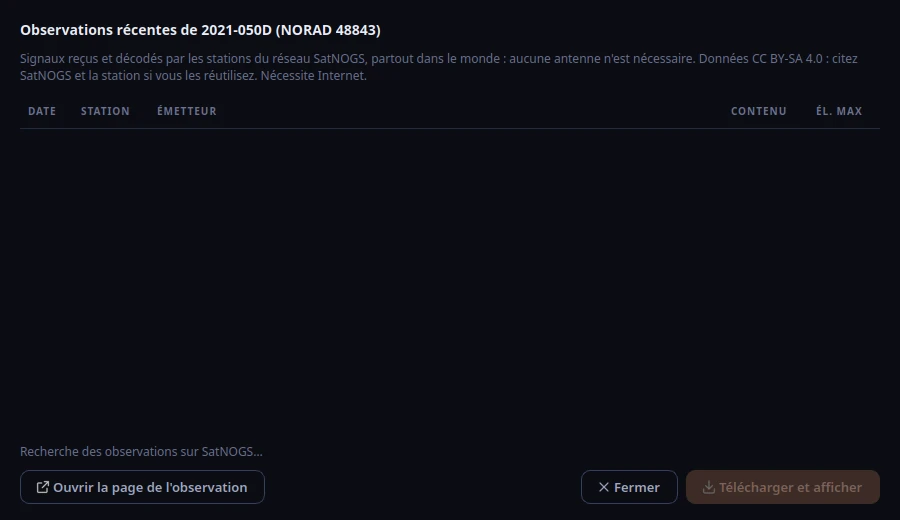
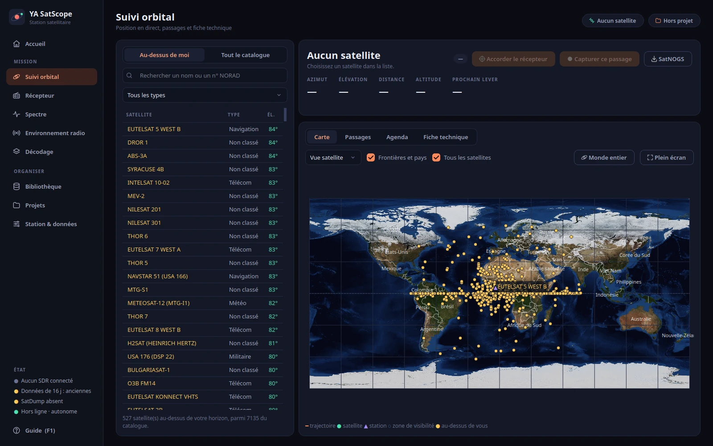